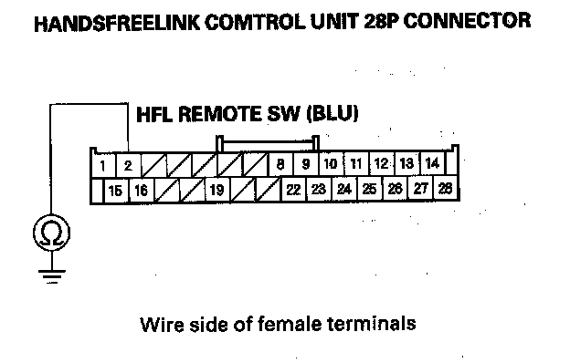

B1780
DTC B1780: HFL-Voice Control Switch (HFL TALK/HFL BACK Buttons) Circuit ShortNOTE: If you are troubleshooting multiple DTCs, be sure to follow the instructions in B-CAN system diagnosis test mode A.
1. Clear the DTCs with the HDS.
2. Turn the ignition switch OFF, then start the vehicle and turn the steering wheel back and forth several times.
3. Check for DTCs with the HDS.
Is DTC B1780 indicated?
YES - Go to step 4.
NO - Intermittent failure, the system is OK at this time.
4. Turn the ignition switch OFF.
5. Do the HFL-voice control switch test.
Is the switch OK?
YES - Go to step 6.
NO - Replace the cable reel subharness.
6. Turn the ignition switch OFF.
7. Remove the glove box.
8. Disconnect the 28P connector from the HandsFreeLink control unit.
9. Disconnect the 20P connector from the cable reel subharness.

10. Check for continuity between the HandsFreeLink control unit 28P connector terminal and body ground.
Is there continuity?
YES - Repair short in the wire.
NO - Replace the HandsFreeLink control unit.